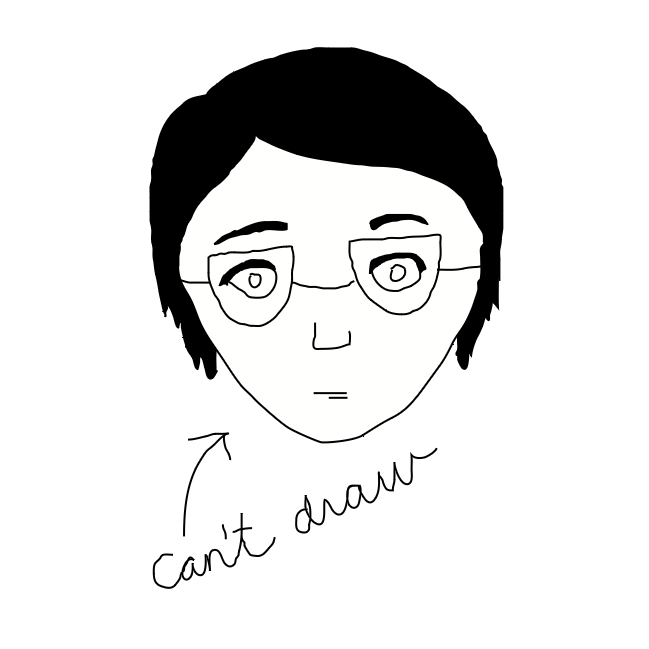
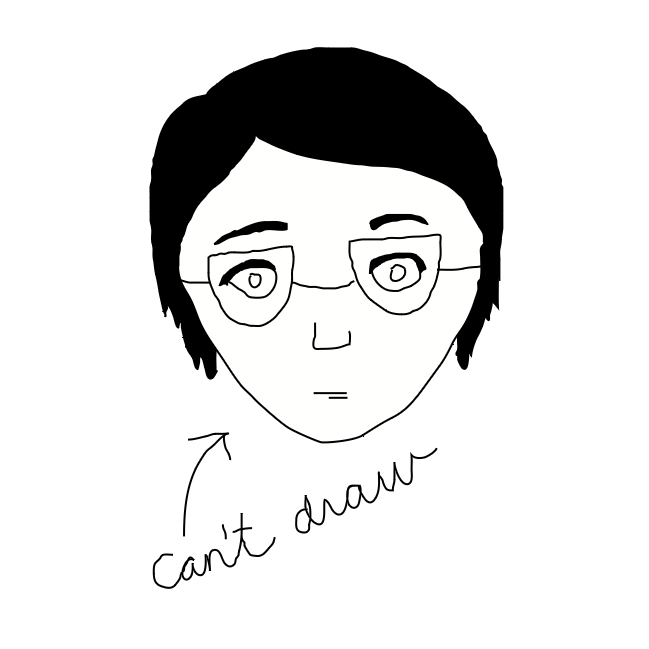

Hi! My name is Sabine Chu, and I use she/her pronouns. I'm originally from New York City. Since fall 2022, I've studied math and urban planning at MIT. Outside class, I like to read, run, listen to music, and bake. Right now, I'm thinking a lot about...
- Constrained verse forms, what fiction ought to represent, making writing breathe
- Environmental justice, public transit, effective community-building, sidewalks
- Innovation without the jargon, enabling more equitable access to capital, the roles of philanthropy and advocacy
This website is very much a work in progress, but I'd like to use it to keep track of my goals and compile my work.
 
